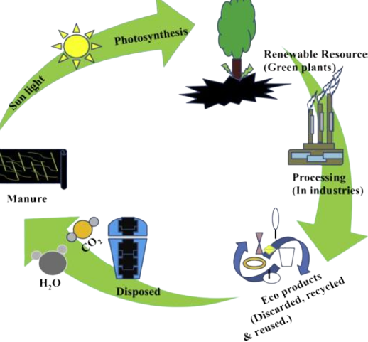

Sustainability consists of fulfilling the needs of current generations without compromising the needs of future generations, while ensuring a balance between economic growth, environmental care and social well-being. It is the ability to exist and develop without depleting natural resources for the future.
Sustainable development is development that is grounded in five dimensions, which have been expressed through the “5 P's”, or five pillars of sustainable development:
To be deemed biodegradable, the material must decompose naturally, with the actions of micro-organisms, even without oxygen. These materials then become part of the environment and cause no damage in the long run.
Eco-Branch make sustainability a part of you, by making it a lifestyle. We don’t limit sustainability to a one-time, feel-good thing. We make it accessible to everyone, anytime, anywhere and specially for our future generation.
